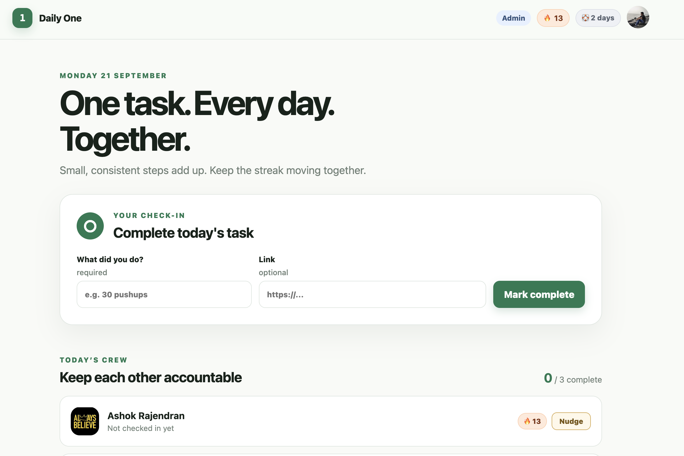

Daily One
LiveA personal accountability & streak app that keeps one important habit on track every day.
Read the engineering story
Problem
Habit trackers get abandoned because they demand too much. I wanted a dead-simple daily commitment with real streak accountability.
Solution
A focused web app: one daily task, streak logic, and reminders — nothing else competing for attention.
Architecture
Containerized web app served behind Cloudflare Tunnel on my home server, alongside the rest of S7 Labs. (TODO: fill exact stack — e.g. framework, DB, auth provider.)
Interesting challenges
Modeling streaks correctly across time zones and missed days; keeping auth/session handling simple but secure.
Auth
Authenticated access with per-user state. (TODO: name the authN/authZ approach — session cookies, OAuth, etc.)
Result
Running in daily use on daily-one.s7labs.dev.